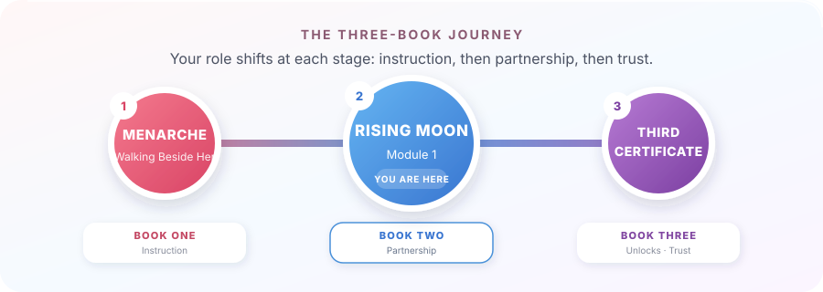

"You already showed up once. This is you, showing up again."
We are a menstrual care ecosystem rooted in education and community impact, built by women who know these stories firsthand.
We believe that understanding how your cycle affects your daily routine may provide an upper hand that allows you leverage the highs and navigate the lows.
We empower girls and women to navigate menstruation with dignity through trusted education, quality menstrual care, accessible healthcare, and community support — while creating measurable menstrual equity with every purchase.
To become Africa's most trusted menstrual health companion, walking with every girl and woman through every stage of her menstrual journey while ensuring that every purchase creates lasting opportunities for another.
For Rising Moon Mums
"You already showed up once. This is you, showing up again."
Two doors, one guide
Continuing with her: you read Walking Beside Her at Menarche, this is your next chapter together.
Starting here: she came to Rising Moon on her own, you're catching up on the conversation, not starting late.

The first guide was about a single day, her first period, and everything leading up to it.
This one is about the next stretch, months and cycles, where the job changes from getting her through one moment to helping her own her entire rhythm.
You're not starting over. You're not done either. This is the middle chapter, the one where she starts doing more of this herself, and you're learning what your role looks like when she does.
A little about how this guide works, same as before:
Worth a doctor's visit, not a reason to panic:
None of these are emergencies. They're simply reasons to check in, the same way you would for any other part of her growing body.
Save the Ask-HerRhythm number somewhere you'll actually find it at 11pm. That's the whole moment, just save the number.
What changes once a period isn't a single event anymore, it's a pattern.
She's likely noticed her cycle isn't identical every month, and that's normal, not a sign something's off.
What's different now isn't the biology, it's the rhythm of it. She's moved from "this happened to me" to "this is part of how my month works."
That shift is worth naming out loud to her, she may not have noticed it herself yet.
Ask her, "What's different about your period now compared to when it first started?" Then just listen, you're not looking for a specific answer.
The first conversation was hard because it was new. This one is hard for the opposite reason, it's easy to assume it's already been had.
The risk at this stage isn't silence, it's assumption. You already talked once, so it's tempting to think the topic is closed. It isn't.
Her questions now are different, more specific, more about her life than her body.
| Instead of... | Try… |
|---|---|
| "You know how this works by now." | Do you need any help with this? |
| "Did you take your kit?" | Have you packed your Dignibag? |
| "You're fine, right?" | Is there anything you'd like us to do together? |
Ask her one open question from the table above this week. Just one, don't turn it into an interview.
Different fears than her first period. Less of "will everyone know," more of "is this ever going to feel manageable."
Where her first-period questions were about being seen, her questions now are more likely to be about being in control.
"Why does this month feel worse than last month?" "Is it normal that I still get caught off guard sometimes?"
She has a tool for this now, the Emotion Wheel from her own guide, name it, notice it, decide what helps. You don't need to run it for her. Just ask if she's using it.
Ask her, "Did you try the Emotion Wheel this month? What came up?" Let her answer carry the conversation.
Less unboxing a gift, more checking in on what's working.
It's where she'll start hearing about product choices beyond pads and liners, cups and tampons, when she's ready and curious, not before.
Sit with her while she logs one entry in the Cycle Tracker, just once, so she knows you know it exists.
Confidence was the goal at Menarche. Independence is the goal now.
Each of these is you doing less, on purpose. That's not distance, that's the plan working.
Let her restock her own emergency pouch this month, without checking her work.
Her next kit brings Owning Your Rhythm, Module 2 of her Becoming You curriculum. A second Walking Beside Her guide unlocks around her third certificate, when her needs shift again, from partnership to trust. You'll know when that one arrives.
She still needs you. Not the way she did at eleven, but she needs you.
Puberty didn't mean she needed you less, it meant she needed you differently, and that's still true now, further down the road.
There will be months she wants to talk it through in detail, and months she wants to handle it entirely on her own and say nothing.
Both are her trusting you'll be there either way.
A page for you, not her.
What's changed in how I talk to her about this, since her first period...
What I'm learning to let go of...
What I still want to say to her, someday...